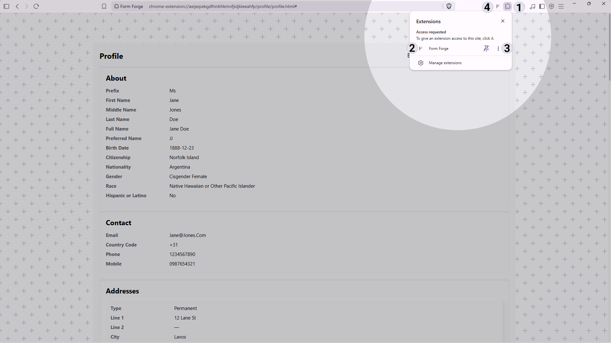
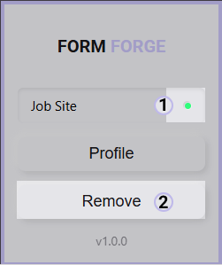
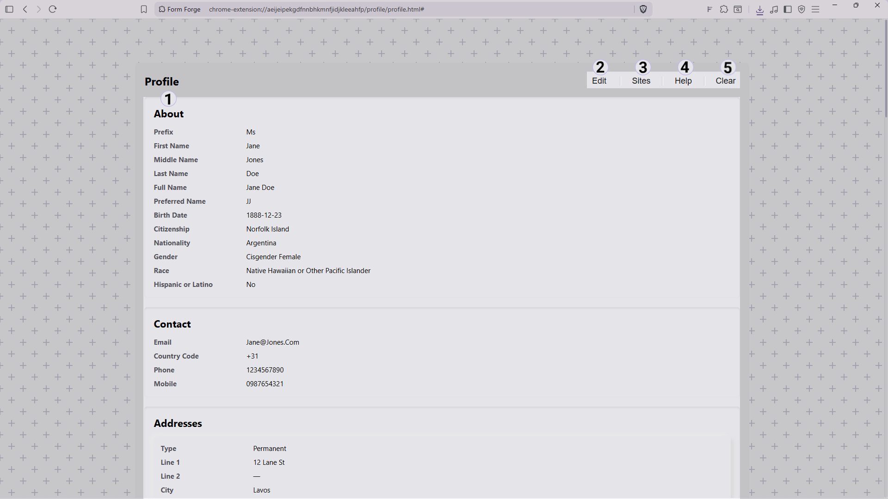
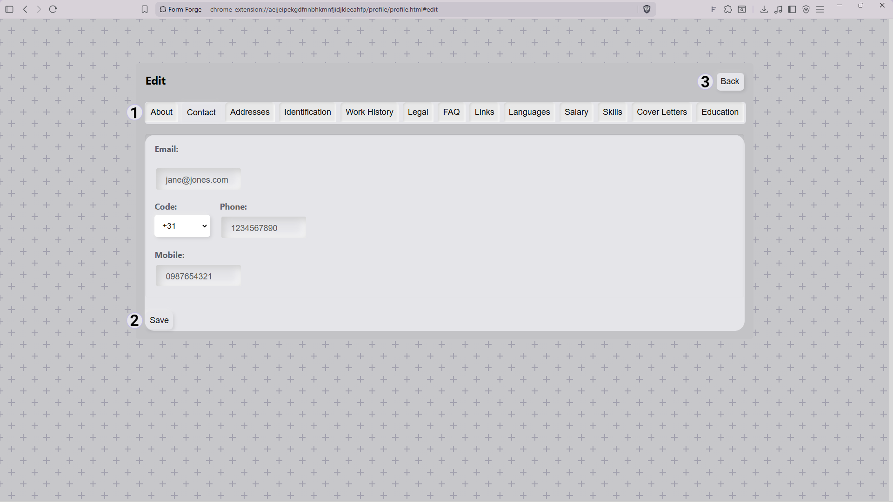
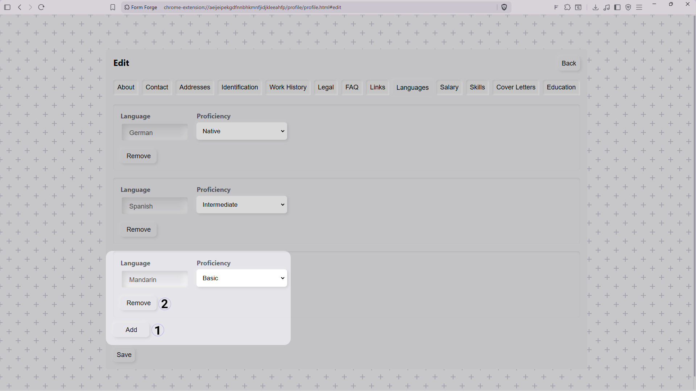
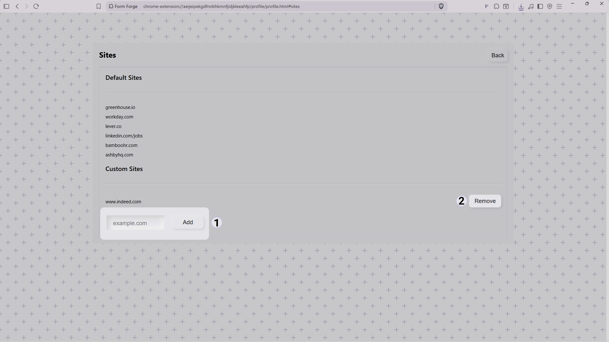
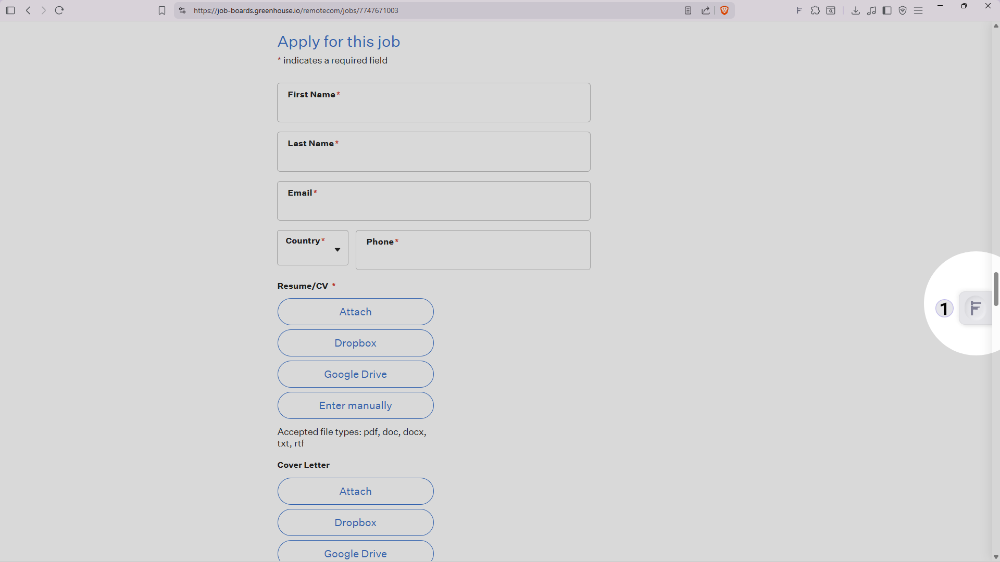
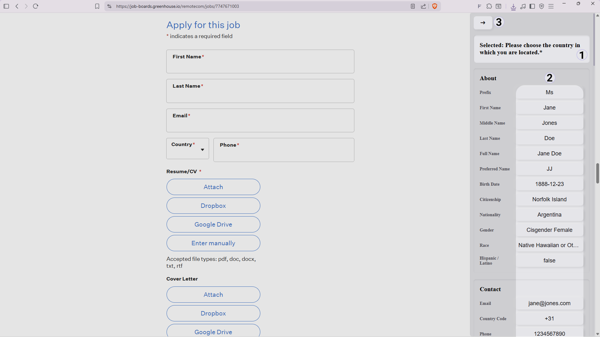
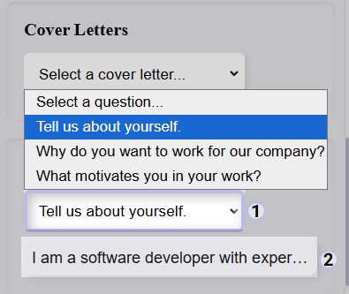

The popup is your control center. Use it to manage your profile, access help.

When visiting a supported job site, the indicator turns green and the button changes to allow you to remove the site.

Your profile stores the information Forge uses when filling job applications.

Fill in your information and save your profile. Fields such as contact details, skills, and other information can be entered directly. Some sections allow multiple entries such as experience, education, and projects.

Some sections support multiple entries, allowing you to add items such as work experience, education, and projects.

Form Forge automatically activates on a set of default job sites. You can also add your own custom sites so Forge activates wherever you apply.

Default sites are built in and cannot be removed. Custom sites you add here will also appear in the popup when you visit them.
When visiting a supported job website,Form Forge can help fill application fields using the information saved in your profile.
Form Forge supports a growing number of application platforms. Features may vary between websites depending on how the application form is built.

The panel can also open when interacting with a supported input field. Selecting a field allows Forge to know where information should be inserted.

Some saved information, such as cover letters or FAQ answers, can be selected before inserting.

Helpful information for getting the best results with Form Forge.
Form Forge automatically activates on supported job application websites, including:
- Greenhouse
- LinkedIn Jobs
- Workday
- BambooHR
- FullStack
Greenhouse applications currently support automatic population of text
fields, text areas, and dropdown selections.
Features may vary between websites depending on how the application form
is built.
Certain application fields are intentionally left for applicants to review and complete themselves.
- Privacy acknowledgements
- Consent checkboxes
- Terms and conditions
- CAPTCHA challenges
- Security verification prompts
Forge is designed to reduce repetitive data entry during job applications, but you should always review your application before submitting it.
- Verify all information entered on your behalf.
- Review privacy notices and consent requests.
- Check employer-specific questions and responses.
- Confirm the company and position you are applying for.
You remain responsible for the final contents of your application and the decision to submit it.
Supported job platforms are regularly updated by their providers. While Forge is actively maintained, website changes may temporarily affect autofill functionality until compatibility updates are released.